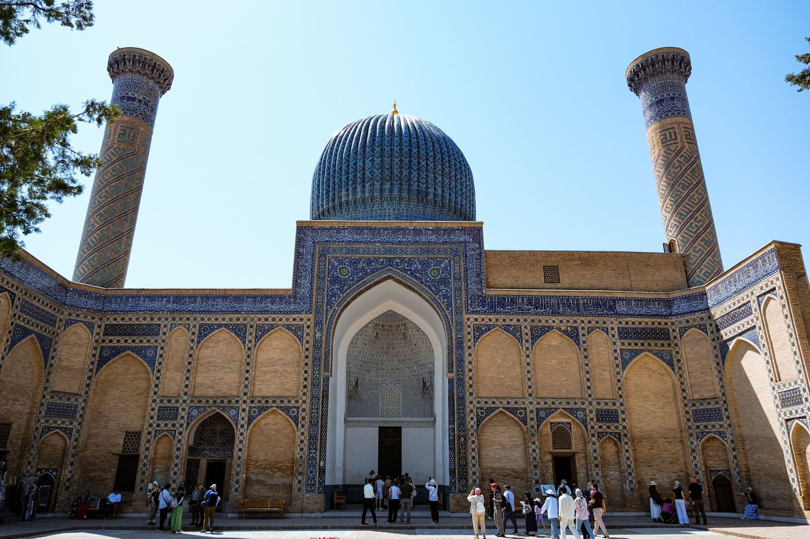
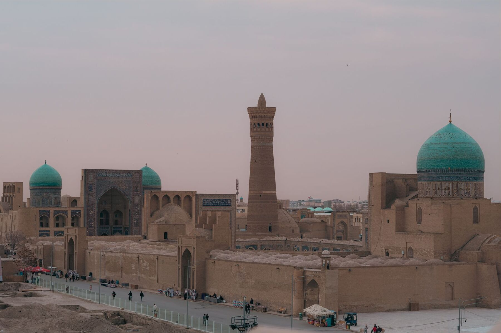
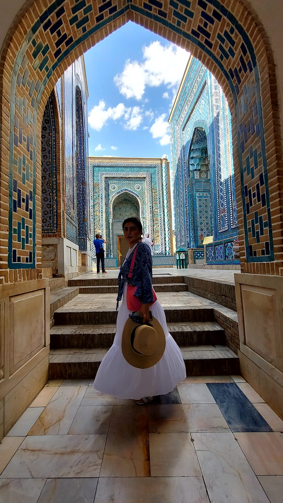

- Направления
- Ташкент, Самарканд, Бухара
- Продолжительность
- Несколько дней (по вашему выбору — обычно от 5 до 7)
- Формат
- Индивидуальный тур
- Транспорт
- Комфортный минивэн + скоростной поезд «Афросиаб» между городами
- Цена
- По запросу — свяжитесь с нами для индивидуального расчёта
- Дети
- Будем рады
- Языки
- Английский, русский, испанский
Что это за тур
Три города, совершенно не похожих друг на друга, объединённые историей Шёлкового пути и веками цивилизации, сделавшими этот край одним из самых богатых культурой мест на земле.
Это индивидуальный тур. Гид едет с вами из Ташкента через Самарканд в Бухару: один человек на всём маршруте, персональное внимание и те знания изнутри, которых просто не получить в обычной экскурсионной группе.
Ташкент — 1-й и 2-й дни
- Комплекс Хазрати Имам (Хаст-Имам) — духовное сердце Ташкента, где хранится один из древнейших Коранов в мире
- Медресе Кукельдаш — богословская школа XVI века, действующая до сих пор
- Базар Чорсу — огромный рынок под куполом, где кипит жизнь Ташкента
- Площадь Мустакиллик — площадь Независимости и советская городская застройка
- Театр оперы и балета имени Навои — образец советской архитектуры в восточном стиле
- Набережная Анхор — променад вдоль канала для вечерних прогулок
Где едим: центр плова Besh Kazan (плов в огромных казанах на открытом огне) · Ulfatlar · чайхана Navrutz.
Самарканд — 3-й и 4-й дни
- Площадь Регистан — три медресе друг напротив друга, покрытые изразцами и мозаикой
- Мавзолей Гур-Эмир — место упокоения Тимура (Тамерлана)
- Некрополь Шахи-Зинда — улица мавзолеев в самых насыщенных оттенках синих изразцов
- Мечеть Биби-Ханым — когда-то крупнейшая мечеть исламского мира
- Базар Сиаб — специи, сухофрукты и местные лепёшки
«Каждый камень Самарканда — как страница древней книги». — Сарвиноз, гид
Где живём: гостевой дом Musavvir — рейтинг 9,5, в старом городе, в 10 минутах ходьбы от Регистана, полон старинных вещей от имперской до советской эпохи.



Бухара — 5-й и 6-й дни
- Крепость Арк — древняя цитадель, которой более 1500 лет
- Минарет и мечеть Калян — минарет, который, по преданию, не решился разрушить даже Чингисхан
- Ансамбль Ляби-Хауз — водоём в окружении тутовых деревьев, медресе и караван-сарая
- Чор-Минор — медресе с воротами о четырёх башнях
- Торговые купола — древние крытые базары
Где живём: в старом городе, чтобы вечером гулять по махаллям, когда здесь снова чувствуется средневековье, — K. Khorezm Plaza и Orient Star одинаково хороши.
Переезды между городами
Из Ташкента в Самарканд — на скоростном поезде «Афросиаб» (около 2–2,5 часа), из Самарканда в Бухару — на скоростном поезде (около 2,5 часа). Билеты гид покупает в рамках тура.
Что включено
- Все переезды по городам на минивэне с кондиционером
- Билеты на поезд между городами (эконом-класс)
- Профессиональный гид на протяжении всего путешествия
- Все входные билеты в музеи и на памятники
- Встреча и проводы в аэропорту Ташкента
- Бутилированная вода в машине
- Поддержка гида 24/7
Что не включено
- Международные перелёты в Ташкент и обратно
- Проживание в гостиницах (мы подскажем и поможем забронировать)
- Обеды и ужины (мы отведём вас в лучшие места — оплата на месте)
- Личные покупки и сувениры
- Туристическая страховка (настоятельно рекомендуем)
- Чаевые гидам и водителям
Сувениры — что и где купить
Керамика: синяя керамика Риштана — кобальтовая глазурь на красной глине и узоры, не менявшиеся с IX века.
Текстиль: вышивка сузане, шёлковый икат и ковры ручной работы — лучше всего в Самарканде и Бухаре; винтажные вещи — на ташкентском базаре Янгиабад.
Ножи: пчаки ручной работы из Коканда и Чуста.
Специи и сухофрукты: базары Чорсу и Сиаб — шафран, курага, фисташки и грецкие орехи.
Для вывоза антиквариата и археологических предметов нужно государственное разрешение. Покупайте только в официально зарегистрированных магазинах.